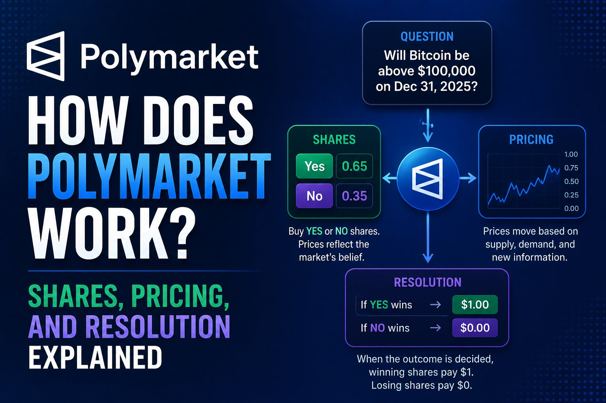

How Does Polymarket Work? Shares, Pricing, and Resolution Explained

The short answer
Polymarket is a prediction market: instead of betting against a bookmaker, you buy shares in how a real-world event will turn out, and the market itself sets the price. Every market boils down to a Yes side and a No side. A Yes share that turns out correct pays exactly $1.00; the losing side's shares pay $0.00. The current price of a share — anywhere from $0.01 to $0.99 — is the market's live, crowd-set estimate of the probability that outcome happens. If Yes is trading at $0.65, the market is collectively pricing that event at roughly a 65% chance. There's no "house" on the other side of your trade; you're trading against other users, and you can sell your position before the event resolves instead of holding it to the end.
Where your money actually sits
The original, global version of Polymarket runs on the Polygon blockchain and settles trades in a dollar-pegged stablecoin — historically USDC, with Polymarket more recently introducing its own ERC-20 token called pUSD, which is itself backed by USDC. You connect or create a wallet, fund it, and Polymarket's smart contracts handle settlement. Orders are matched off-chain for speed, then settled on-chain, which is why trading feels closer to a normal exchange than to sending crypto manually. There is a second, separate product worth knowing about: Polymarket US, a CFTC-regulated app built on licenses Polymarket acquired through its purchase of QCX, which lets US residents fund accounts with a debit card or bank transfer instead of crypto. It launched to iOS users in May 2026 with a sports-first market lineup, and Android access has been rolling out since. The two products are legally and operationally distinct, so which one applies to you depends on where you live.
The share mechanic in one example
Say a market asks "Will the European Central Bank cut rates before July?" If Yes shares are trading at $0.40, the market thinks there's about a 40% chance. Buy 10 Yes shares at $0.40 and you've spent $4.00. If the ECB does cut, each share redeems for $1.00 — a $10.00 payout, or a $6.00 profit. If it doesn't, those shares expire worthless and you lose your $4.00. Every dollar of USDC that enters a market creates one Yes share and one No share, so the two sides are always fully collateralized against each other — the market can't pay out more than it took in.
How prices move
Prices aren't set by Polymarket; they move the same way any order book moves. Each market has bids and asks for Yes and No shares. When more people want to buy Yes than sell it, the price rises, which pushes the implied probability up. As news breaks, or as an event gets closer, traders reprice their positions and the number shifts in real time. This is the "wisdom of crowds" idea behind prediction markets: individually, no single trader has to be right, but the aggregate price reflects everyone's combined, financially-backed view. That doesn't make it a guarantee — a market sitting at 75% still means the other outcome happens one time in four.
How a market actually gets resolved
Every market has written resolution rules attached to it, and reading them before you trade matters more than most beginners expect — a vague or narrowly worded rule can resolve a market in a way that surprises even correct predictions. On the global platform, resolution runs through UMA, an oracle system: once the real-world outcome is known, someone "proposes" the result by posting a bond in USDC. If nobody disputes it, the proposer gets their bond back plus a small reward, and the market settles. If someone disputes it, UMA's token holders vote on the correct outcome. This is what makes Polymarket resolution decentralized rather than something Polymarket itself decides unilaterally — though it also means resolution can occasionally be slower or messier than a simple company ruling would be.
Fees
Polymarket's global platform doesn't charge a standard per-trade commission on most markets; it makes money through other mechanisms like spread capture and integrations, and traders mainly pay small Polygon gas fees, typically just a few cents. Polymarket US uses a different, published formula-based fee that scales with trade size and is highest on close-to-50/50 markets and lowest near the extremes — a structure designed to keep coin-flip trading a little pricier than trading on near-certain outcomes, and to reward "makers" who post resting orders over "takers" who fill them.
What you're actually taking on
Two things trip people up. First, positions are binary — if a market goes against you, your shares can go to zero with no partial recovery, unlike a stock that can bounce back. Second, liquidity varies enormously by market. A heavily traded market like a World Cup winner contract has a tight spread and lets you enter or exit near the displayed price; an obscure niche market might have a wide spread where even a modest order visibly moves the price. Check the order book depth before sizing a trade, not just the headline percentage.
Polymarket vs. Kalshi, in one line
The core mechanics — Yes/No shares, price-as-probability, peer-to-peer order books — are nearly identical between Polymarket and Kalshi. The real difference is plumbing: Kalshi is a US-based, CFTC-regulated exchange that settles in plain dollars through your bank, with every new contract type requiring individual regulatory approval, while Polymarket's global platform is a blockchain-native, more permissively-listed marketplace settled in USDC/pUSD. Polymarket US sits in between — dollar-funded and CFTC-regulated like Kalshi, but currently narrower in market coverage as it rolls out category by category.
Disclaimer: This post is for informational purposes only and is not financial, legal, or tax advice. Prediction markets carry real risk of loss, availability and rules vary by platform and jurisdiction, and both Polymarket's global and US products can change quickly. Always confirm current details directly on polymarket.com or polymarket.us before trading.